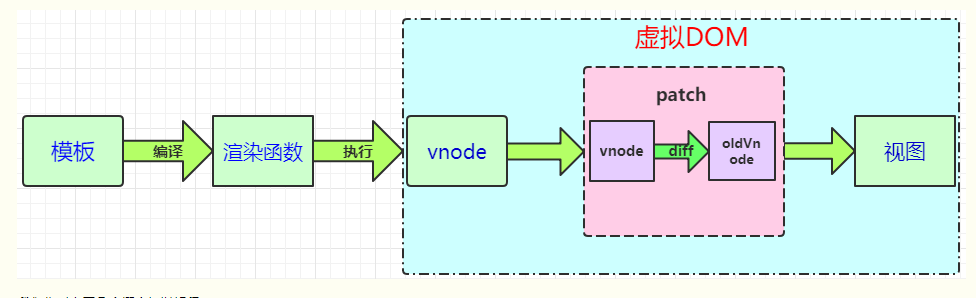

虚拟dom

节点、树以及虚拟 DOM
在深入渲染函数之前，了解一些浏览器的工作原理是很重要的。以下面这段 HTML 为例：
<div>
<h1>My title</h1>
Some text content
<!-- TODO: Add tagline -->
</div>
上述 HTML 对应的 DOM 节点树如下图所示：

每个元素都是一个节点。每段文字也是一个节点。甚至注释也都是节点。一个节点就是页面的一个部分。就像家谱树一样，每个节点都可以有孩子节点 (也就是说每个部分可以包含其它的一些部分)。